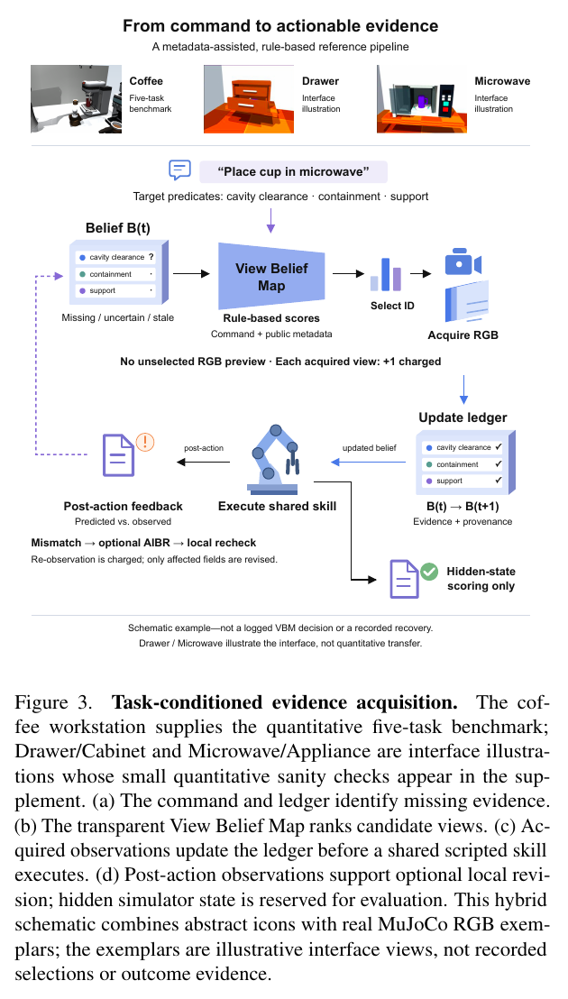

Sequential acquisition
Choose, observe, update
Acquire views one at a time under a budget. The reference uses public view metadata and its current ledger to choose what to inspect next.
Robot learning · Active perception · 2026
Benchmarking Task-Conditioned Actionable Spatial Belief for Manipulation
A robot can recognize a scene and still miss the evidence its next action requires. I proposed and led a benchmark and diagnostic reference pipeline that make this command-to-evidence dependency explicit, then test it through downstream manipulation outcomes.

01 · The research question
At a coffee workstation, placing a cup requires evidence about cup–spout alignment, support, and clearance. Grinding requires a different chain: the hopper, chute, receiving basket, and relevant controls. The workstation can remain unchanged while the evidence needed for the next action changes.
Scene recognition and scene completeness do not directly test that dependency. I wanted an evaluation that asks whether an agent acquires the observations its current command actually requires, then checks the resulting action.
Can an agent bind a command to the spatial and functional evidence that makes it executable?

02 · Benchmark design
Each case pairs a manipulation command with a frozen candidate-view set, a shared scripted skill, and hidden postconditions used to score the outcome. Keeping the downstream skill fixed makes evidence selection a measurable part of the manipulation problem.
Episode counts reflect repeated evaluations over frozen cases. The primary quantitative study is the coffee workstation; the two smaller domains test whether the same evaluation interface remains useful in additional settings.
Sequential acquisition
Acquire views one at a time under a budget. The reference uses public view metadata and its current ledger to choose what to inspect next.
Full-preview VLM ranking
Show a VLM all twelve RGB candidates and ask for three unique view IDs. This is a separate diagnostic of visual evidence ranking.
The different information access and priors are part of each protocol. Their results should be read within those settings.
03 · Diagnostic reference pipeline
I developed a transparent reference that makes the command-to-evidence decision inspectable. It combines an explicit spatial–functional belief representation, a command-conditioned view scorer, and an optional repair step after execution.
Store task-relevant predicates about pose, relations, support, containment, and function. Each entry records its estimated value, confidence, supporting view IDs, task relevance, and whether it may have become stale.
What does the command require, and which entries lack reliable support?
Rank candidate views by their estimated gain over missing, uncertain, or stale target predicates, accounting for view cost. The reference scorer is a deterministic, metadata-assisted rule; acquired RGB updates the ledger.
Which available observation could resolve the relevant gap?
After a shared skill executes, compare the expected and observed outcome. A mismatch triggers a local recheck of affected predicate types, with any recovery observation charged to the budget.
Which assumption needs revision after an unexpected outcome?

The frozen trace grind_g000_intervention records the reference choosing hopper_grinder_close at an initial one-view budget. Its logged score is 3.60; the resulting execution passes all three hidden postconditions. This is one successful trace, alongside aggregate one-view results reported below.

04 · Experimental results
The main metric is manipulation-postcondition success: whether the shared skill’s outcome satisfies the command. The panels below preserve the separate observation protocols and use the paper’s reported values.
C.1 · Sequential acquisition
Select views sequentially under an initial budget H = 5. Every method uses the same candidate set, scripted skills, and hidden postcondition evaluator.
500 frozen coffee cases; 3 inference repeats per case, giving 1,500 episodes per method at this setting.
The ledger alone is insufficient. Scoring views by missing command-relevant evidence raises success from 12.4% for Target ledger to 97.9% for View Belief Map; optional repair brings the primary result to 98.8%.
C.2 · Command shift
Keep object identity fixed while changing the required function. The primary initial observation budget is H = 3.
500 frozen coffee cases; 3 inference repeats per case, giving 1,500 episodes per method at this setting.
Seeing a plausible object part does not establish that it is the right part for this command. The command-bound reference reaches 98.9%, while command-agnostic affordance selection reaches 19.7%.
Separate full-preview stress test
Each model previews all 12 RGB candidates and returns exactly 3 unique ranked view IDs. This differs from the sequential acquisition protocol.
1,500 complete evaluator records per model. All seven models pass the archived output-format, candidate-membership, provenance, and no-fallback admission gate.
Overall success ranges from 26.0% to 42.9%. Task-level results show that several models do well on visually salient Tamp or Place cases while struggling on Insert, Serve, or Grind.
The reference is an auditable, metadata-assisted pipeline. The VLM panel measures prompted full-candidate ranking; the difference is not a controlled comparison between learned architectures.

05 · Controls & interpretation
On the same-object functional-OOD split, removing command binding drops success to 19.7%; removing functional fields drops it to 0.0%. A stored representation becomes useful when it identifies the evidence required by this command.
| Reference variant | Success |
|---|---|
| Full reference | 98.9% |
| Without command binding | 19.7% |
| Without functional fields | 0.0% |
| Without target conditioning | 3.5% |
VBM-Vision replaces nominal coverage metadata with RGB-derived functional-part scores. A frozen CLIP-B/32 representation and a per-predicate linear head predict visibility using scene-group out-of-fold evaluation; command binding is applied after that visual stage.
| Protocol | RGB-derived scores | Shuffled scores |
|---|---|---|
| C.1 · H = 5 | 98.5% | 14.9% |
| C.2 · H = 3 | 98.9% | 11.4% |
Shuffling those scores among candidate views collapses success. This supports the importance of candidate-image content while keeping the remaining dependency explicit: the coverage head uses predicate-visibility supervision during training.
At an initial one-view budget, the reference with local repair reaches 19.0% closed-loop and 58.6% functional-OOD success. Recovery can acquire additional charged observations, so this setting limits the initial selection rather than total observation cost.
Local repair has only a small effect at the near-saturated primary settings. Its role is clearer in a constructed mismatch stress test and in the drawer check, where it recovers 30 additional cases. The two held-out domains reach 66.7% each with repair at H = 2.

I retained frozen manifests, raw model responses, parsed selections, evaluator records, and hash checks. VLM admission requires complete, correctly ordered records and exactly three unique valid IDs without fallback parsing. Shortcut controls test object-category and command-agnostic explanations; task-level analysis exposes failures that an overall average could hide.
06 · Scope & next steps
The reported work evaluates frozen RGB view selection with scripted skills in simulation. The rule-based reference makes task dependencies explicit and supports inspection; the RGB-derived extension retains supervised visibility labels. The smaller drawer and microwave checks provide limited evidence beyond the coffee setting.
The next research question is how an agent could learn these dependencies and choose among richer ways to obtain evidence: another view, a physical probe, or human input. My physical Arm-200 coffee workstation is a separate project in development that can help make those questions concrete.
I am especially interested in preserving the same discipline as the system becomes more capable: identify the assumption that matters to the action, acquire evidence that can change the decision, and use an unexpected outcome to revise the affected belief.
07 · My contribution
I am the first author and proposed and led the project, in collaboration with Mingkun Xu, the corresponding author.
Proposed the task-conditioned actionability question and designed the evaluation to separate evidence selection from low-level controller quality.
Led the benchmark design and implementation, including command-conditioned evidence requirements, structured belief updates, view scoring, and optional local repair.
Led controlled experiments, model-admission checks, shortcut and leakage controls, task-level analysis, and verification against frozen experiment records.
Led manuscript preparation and the presentation of method diagrams, logged decision traces, numerical results, and experimental scope.
The paper acknowledges Guangyu Li for the initial simulation draft that supported early benchmark development.
Figures and numerical summaries on this page are taken from arXiv:2611.09794v1. Figure images preserve the original labels; select an image to enlarge it.